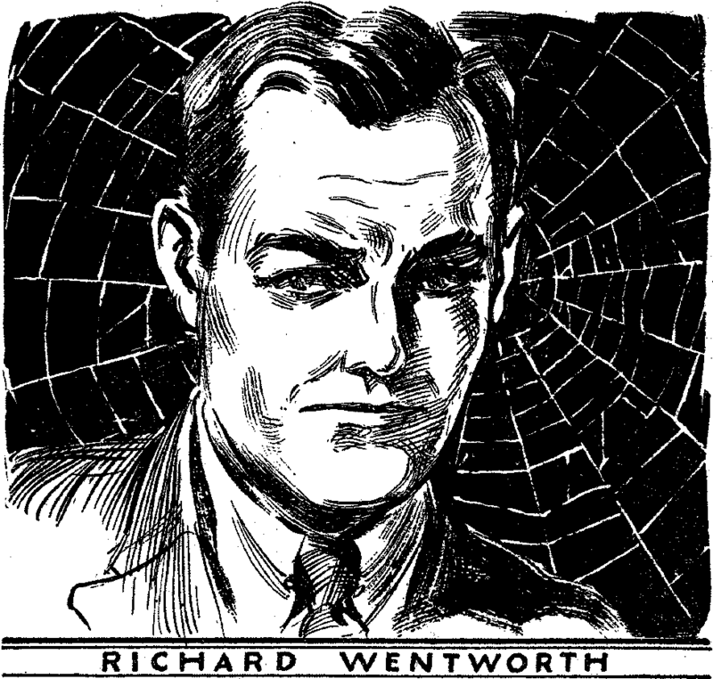
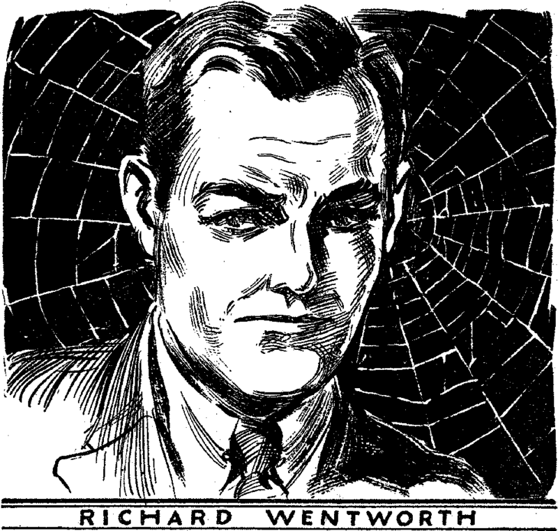
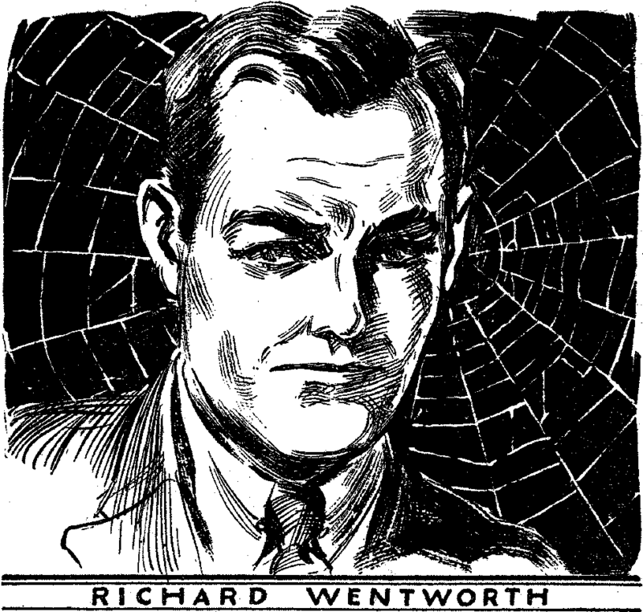

Spider-Man is a superhero apperaing in American comic books published by created by writer-editor Stan Lee and artist Steve Ditko, he first appeared in anthology comic books Amazing Fantasy #15 (August 1962) in the SIlver age of Comic Books. He has been featured in comic books, television shows, films,video games,novels,plays
In 1962, with the success of the Fantastic Four, Marvel Comics editor and head writer Stan Lee was casting for a new superhero idea. He said the idea for Spider-Man arose from a surge in teenage demand for comic books and the desire to create a character with whom teens could identify.[15]:1 As with Fantastic Four, Lee saw Spider-Man as an opportunity to "get out of his system" what he felt was missing in comic books.[16] In his autobiography, Lee cites the non-superhuman pulp magazine crime fighter the Spider as a great influence,[14]:130[17] and in a multitude of print and video interviews, Lee stated he was inspired by seeing a spider climb up a wall—adding in his autobiography that he has told that story so often he has become unsure of whether or not this is true.
